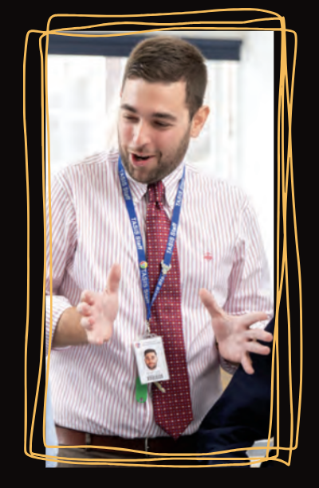

01 · ProgramsCurriculum
Curriculum design
We design hands-on STEM curricula that connect academic goals to creative making, iteration, and authentic problem solving.
overSTEMed helps schools design hands-on STEM programs, train educators, build digital and AI literacy, and create sustainable makerspaces — so innovation becomes part of everyday learning.
Curricula rooted in inquiry, prototyping, and real-world problem solving.
Responsible integration that strengthens digital fluency while supporting teaching, not replacing human judgment.
Makerspaces and STEM labs designed for long-term use, maintenance, and school ownership.
We help schools move beyond isolated STEM lessons and disconnected technology initiatives — building coherent, future-ready learning experiences that combine hands-on STEM, digital and AI literacy, teacher growth, and meaningful spaces for making.
Not bolted on. Not borrowed from the headlines. Designed for the teachers and students actually living in the classroom.
Curriculum, training, AI strategy, and space design adjusted to your students, staff, and operational reality.
Stronger teaching confidence, deeper student engagement, and programs that can actually last.

Michael Tzanis is an international STEM educator, curriculum designer, and technology integration specialist with experience teaching and leading innovative programs across the UK and Europe.
He holds a BSc in Physics from the Aristotle University of Thessaloniki and a Master's degree in STEM Education from King's College London, where his research explored learning through play in STEM education and how hands-on learning can help bridge language gaps for multilingual learners in international schools.
Michael currently works in international education in England and specializes in STEM education, AI literacy, educational technology, makerspaces, robotics, engineering, and interdisciplinary learning.
Through overSTEMed, his mission is to help schools modernize STEM education through tailored curriculum design, teacher training, innovative technologies, and practical implementation strategies that prepare students for a rapidly evolving world.
From curriculum and training to competitions and after-school programs — these are the core areas where overSTEMed can support your school.
We design hands-on STEM curricula that connect academic goals to creative making, iteration, and authentic problem solving.
We equip teachers with practical training, facilitation strategies, and confidence to lead project-based STEM learning.
We help schools adopt AI thoughtfully — with clear guardrails, age-appropriate use cases, and strong educator oversight.
We create makerspace environments tailored to your goals, staffing, budget, and long-term sustainability.
We help schools prepare student teams for international competitions through coaching, technical guidance, and structured practice.
We help schools create engaging after-school STEM and maker programs that extend learning through clubs, projects, and exploration.
Inquiry-led programs that connect STEM learning to creativity, reflection, and authentic interdisciplinary work.
We help schools strengthen rigor while making STEM more applied, engaging, and relevant to the world students are entering.
Practical programs that fit established school systems while expanding digital, AI, and maker-centered learning.
Whether building from scratch or evolving an existing STEM vision — we tailor the work to your context, staffing, and goals.
These anonymized examples reflect the kinds of school partnerships overSTEMed is designed to support — across curriculum, teacher development, AI integration, and learning-space strategy.
The school wanted to modernize its STEM offering and create more hands-on, interdisciplinary learning — supporting multilingual learners through more visual and collaborative experiences.
Designed and implemented a project-based STEM framework centered on purposeful play, engineering design, and collaborative problem-solving. Faculty training focused on AI literacy, maker-centered learning, and practical classroom implementation — alongside hands-on Arduino, robotics, 3D design, and engineering challenges.
Student engagement and participation increased significantly, especially among multilingual learners. Teachers reported greater confidence using STEM technologies and project-based learning, and the work grew into a sustainable interdisciplinary STEM initiative.
The school had invested in STEM equipment and maker tools but lacked a cohesive implementation strategy. The makerspace was underused, and teachers were unsure how to integrate it meaningfully into classroom learning.
Provided consultation on makerspace organization, equipment selection, curriculum alignment, and phased implementation planning. Teacher onboarding resources and PD sessions helped staff build confidence in project-based STEM learning and makerspace facilitation.
The makerspace shifted from a standalone room to an actively used interdisciplinary learning environment. Teachers began integrating engineering and design challenges across subjects, giving students more opportunities for creativity, collaboration, and hands-on problem-solving.
School leadership wanted guidance on the rapid emergence of AI tools in education. Teachers had real questions around responsible use, academic integrity, assessment redesign, and practical classroom application.
Delivered AI literacy workshops focused on responsible implementation, classroom workflows, assessment adaptation, and student AI literacy. Practical frameworks helped teachers explore meaningful use of AI while maintaining academic rigor and ethical expectations.
Faculty developed greater confidence discussing and implementing AI in the classroom. Departments began redesigning assessments and exploring AI-supported workflows, helping the school adopt a more proactive and informed approach across teaching and learning.
Key challenges schools are facing across Europe — along with the kind of future-ready learning approach overSTEMed is designed to support.
Source: European Commission, Promoting STEM Education in Schools (2026).
Many schools have strong intentions but lack a unified strategy that connects curriculum, technology, spaces, and staff development.
Educators are often expected to lead innovation without the time, training, or ongoing professional support needed to do it well.
Overloaded curricula can make it hard to build in inquiry, creativity, and real-world STEM experiences students remember.
Schools may invest in equipment, but without a clear learning model those resources often stay underused or disconnected.
Students benefit most when STEM learning connects to universities, innovation ecosystems, and the world beyond the classroom.
Future-ready STEM has to be accessible, culturally responsive, and meaningful for multilingual and diverse student communities.
A partnership is not a separate service list. It is the way these services are combined and delivered to fit your school's goals, staff, and learning environment.
We begin by understanding your students, staff, curriculum priorities, facilities, and long-term ambitions.
Together we identify which combination of curriculum design, faculty training, AI literacy, space planning, competitions, and after-school programming makes the most sense.
We shape the learning model, resources, and implementation plan around your school's age groups, schedule, and educational aims.
We equip educators with the confidence, facilitation strategies, and practical tools they need to lead the work well.
Schools gain access to online content, practical resources, and consultation on makerspaces or STEM labs where needed.
When the school is ready, we can help grow the work through after-school STEM programs and preparation for international competitions.
Students engage with STEM through building, experimentation, and collaborative challenge — not just exposure to topics.
Teachers gain the tools and confidence to lead hands-on work rather than depend on outside specialists.
Your makerspace strategy is built for daily use, operational reality, and long-term school ownership.
We start with your students, staff, goals, budget, and operational realities before proposing a solution.
We shape curriculum, training, AI strategy, and space design around what your school can realistically sustain.
We leave your team with the knowledge, systems, and confidence to keep growing the work over time.
The future of STEM education should be playful, purposeful, and deeply connected to the real world students are growing into. The goal is not simply to introduce new tools, but to help schools build learning environments where curiosity, creativity, and confidence can thrive.

We work best with school leaders, STEM coordinators, innovation teams, and educators looking for a thoughtful long-term partnership. Start with a short message and we'll shape the next conversation around your goals.